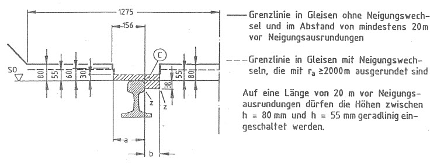

(Fundstelle: BGBl I 1991, Nr. 30 Anlageband S. 2 - 5)
Bild 1
Regellichtraum
in der Geraden und in Bogen
bei Radien von 250 m und mehr
Die Maße beziehen sich auf die
Verbindungslinie der Schienen-
oberkanten (SO) in Sollage;
die Mittellinie steht senkrecht
auf der Verbindungslinie. | Unterer Teil der Grenzlinie
siehe Bild 2 |
Zu Bild 1
Bereich A:
Zulässig sind Einragungen von baulichen Anlagen, wenn es der Bahnbetrieb erfordert (z. B. Bahnsteige, Rampen, Rangiereinrichtungen, Signalanlagen), sowie Einragungen bei Bauarbeiten, wenn die erforderlichen Sicherheitsmaßnahmen getroffen sind.
Bereich B:
Zulässig sind Einragungen bei Bauarbeiten, wenn die erforderlichen Sicherheitsmaßnahmen getroffen sind.
_____________________________
- 1)
Bei Gleisen, auf denen ausschließlich Stadtschnellbahnfahrzeuge verkehren, dürfen die Maße um 100 mm verringert werden. In Tunneln sowie unmittelbar angrenzenden Einschnittsbereichen ist die Verringerung der halben Breite des Regellichtraums auf 1900 mm zulässig, sofern besondere Fluchtwege vorhanden sind. Die Neigung der Schrägen ändert sich nicht.
- 2)
Bei Gleisen, auf denen überwiegend Stadtschnellbahnfahrzeuge verkehren, 960 mm.
- 3)
Den Grenzlinien liegen die Bezugslinie G 2, der Regelwert s
o= 0,4 des Neigungskoeffizienten eines Fahrzeugs und folgende bautechnische Einflußgrößen zugrunde:
| | | große
Grenzlinie | kleine
Grenzlinie | |
| | | | | | | |
| Radius (r) | | 250 | m | ₒₒ | | |
| Überhöhung (u) | | 160 | mm | 50 | mm | |
| Überhöhungsfehlbetrag (uf) | | 150 | mm | 50 | mm | |
| Spurbreite (l) | | 1470 | mm | 1445 | mm | |
| Ausrundungsradius bei Neigungswechsel (ra) | | 2000 | m | 2000 | m | |
| Hebungsreserve | | 50 | mm | 50 | mm | |
| Schienenabnutzung | | 10 | mm | 10 | mm | |
| | | | | | | |
| Bei Gleisen mit Oberleitung zusätzlich: | | | | | | |
| Arbeitshöhe der Stromabnehmer | | 5600 | mm | 5600 | mm | |
| Mindestabstand von der Oberleitung (15 kV Wechselstrom) | | 150 | mm | 150 | mm | |
| | | | | | | |
- 4)
Den Grenzlinien bei Oberleitung liegt der Neigungskoeffizient so= 0,225 eines Triebfahrzeuges und das halbe Breitenmaß eines Stromabnehmers von 975 mm zugrunde.
Zu Bild 1
Tabelle 1
Maße des Regellichtraums bei Oberleitung in Gleisbogen mit Radien von 250 m und mehr
| Stromart | Nenn-
spannung | Mindest-
höhe | Halbe Mindestbreite b
im Arbeitshöhenbereich des Stromabnehmers über SO
| Abschrägung
der Ecken |
| | | a | ≤ 5300 | über 5300
bis 5500 | über 5500
bis 5900 | über 5900
bis 6500 | c | d |
| | kV | mm |
| Wechsel- | 15 | 5200 | 1430 | 1440 | 1470 | 1510 | 300 | 400 |
| strom | 25 | 5340 | 1500 | 1510 | 1540 | 1580 | 335 | 447 |
| Gleich- | bis 1,5 | 5000 | 1315 | 1325 | 1355 | 1395 | 250 | 350 |
| strom | 3 | 5030 | 1330 | 1340 | 1370 | 1410 | 250 | 350 |
Tabelle 2
Vergrößerung des Regellichtraums in Gleisbogen mit Radien unter 250 m
| Bogenradius | Erforderliche Vergrößerung der halben
Breitenmaße |
| | des
Regellichtraums | des
Regellichtraums |
| | an der Bogen-
innenseite | an der Bogen-
außenseite | bei
Oberleitung |
| m | mm |
| 250 | 0 | 0 | 0 |
| 225 | 25 | 30 | 10 |
| 200 | 50 | 65 | 20 |
| 190 | 65 | 80 | 25 |
| 180 | 80 | 100 | 30 |
| 150 | 135 | 170 | 50 |
| 120 | 335 | 365 | 80 |
| 100 | 530 | 570 | 110 |
Zwischenwerte dürfen geradlinig eingeschaltet werden.
Bild 2
Unterer Teil der Grenzlinie
- a)
bei Gleisen, die von allen Fahrzeugen befahren werden dürfen

- b)
bei Gleisen, die ausschließlich von Fahrzeugen befahren werden, die die Bezugslinie der Anlagen 7 und 8 Bilder 2 einhalten

a ≥ 150 mm für unbewegliche Gegenstände, die nicht fest mit der Schiene verbunden sind.
a ≥ 135 mm für unbewegliche Gegenstände, die fest mit der Schiene verbunden sind.
b = 41 mm für Einrichtungen, die das Rad an der inneren Stirnfläche führen.
b ≥ 45 mm an Bahnübergängen und Übergängen (§ 11 Abs. 1)
b ≥ 70 mm für alle übrigen Fälle.
z = Ecken, die ausgerundet werden dürfen.
Die Höhenmaße der Grenzlinien beziehen sich auf die Verbindungslinie der Schienenoberkanten (SO) in Istlage (Berücksichtigung der Schienenabnutzung).
Bereich C:
Raum für das Durchrollen der Räder. Zulässig sind Einragungen von Einrichtungen und Geräten, wenn es deren Zweck erfordert (z. B. Rangiereinrichtungen).